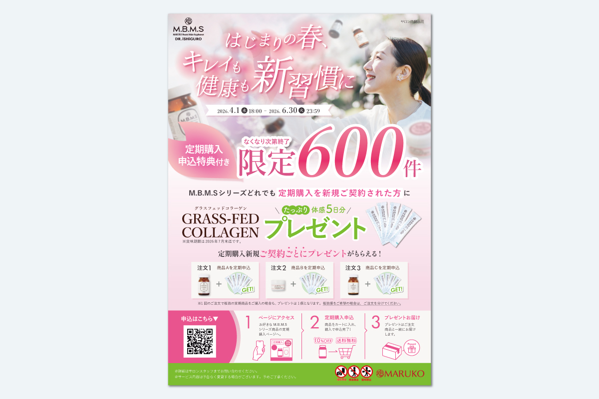
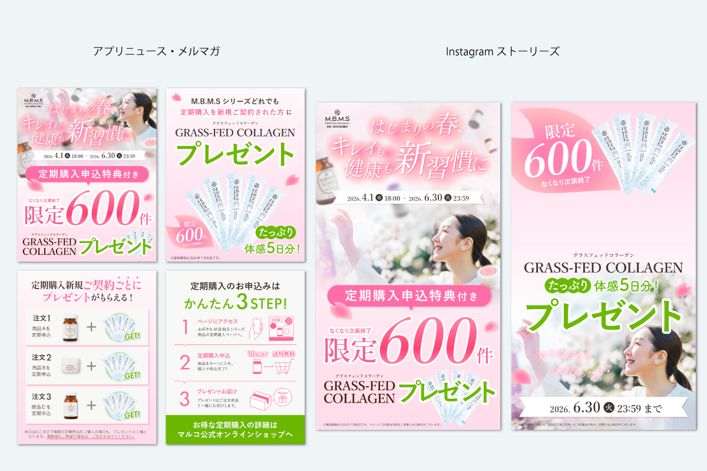

はじまりの春、キレイも健康も新習慣に


| 制作期間 | 2025年3月 |
| 制作時間 | 約10時間 |
| 依頼元 | B&W |
| 媒体 | フライヤー、Instagram（フィード・ストーリーズ） |
| 使用アプリ | Illustrator、Photoshop |
制作背景・意図
M.B.M.Sの新規定期購入促進プレゼント施策の制作を担当しました。春らしい心機一転と新生活を意識したタイトルとビジュアルをイメージにし、ご愛飲いただいているお客様にも定期購入を促進する意図の為、馴染みのある商品ビジュアルを複数背景等に散りばめました。
下部には定期購入の始め方とプレゼント取得のフローにし、プレゼント獲得条件をわかりやすく図式化で明示するように心がけました。